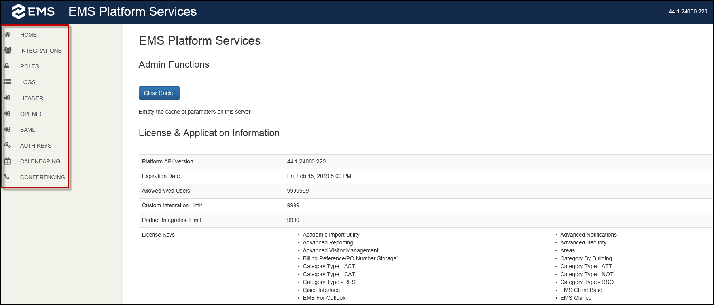
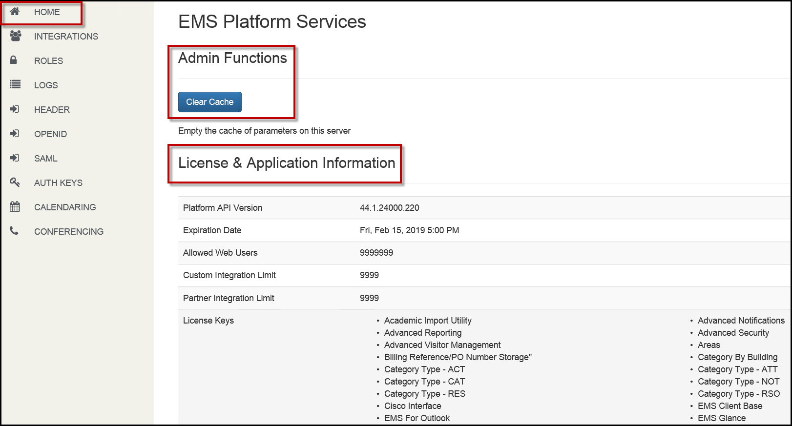
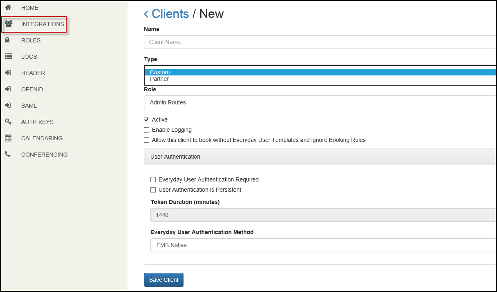
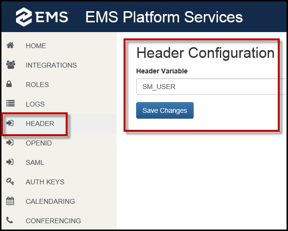
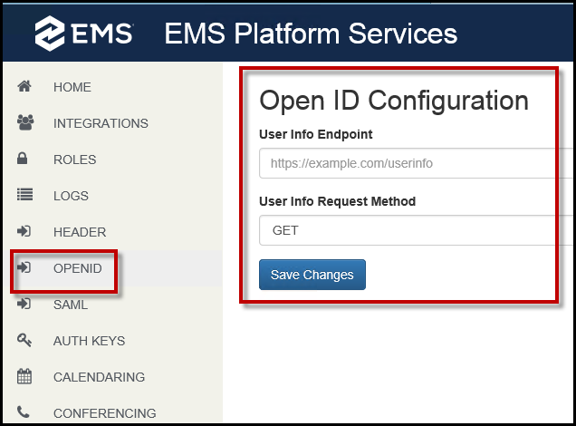
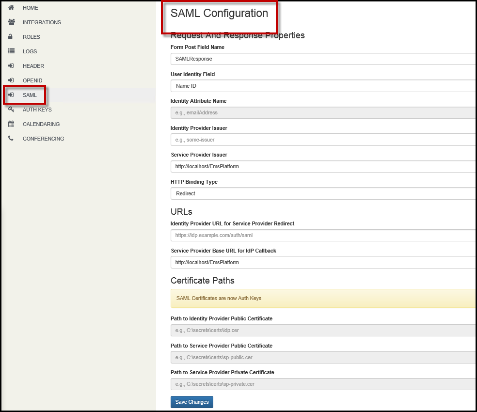
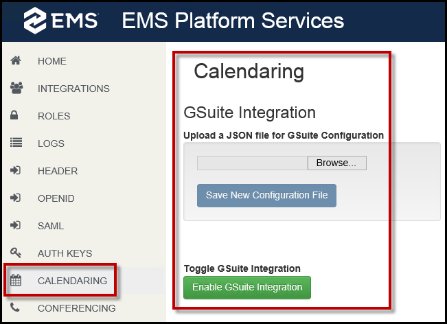
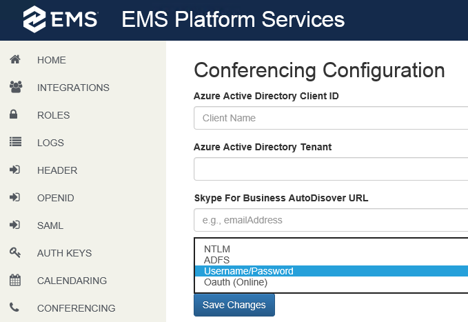

Configure Platform Services in the Admin Portal
To begin configuration of EMS Platform Services, navigate to the Platform Services URL (e.g., https://yourcompany.com/ems-platform-api/admin).
From the EMS Platform Services Admin Portal, you can clear the cache, view license and application information, configure authentication methods, manage integration clients, and view logs.
EMS Platform Services Admin Portal consists of the following tabs:

HOME
From the Home tab, you can perform Administrative Functions, such as Clearing the Cache and viewing License and Application Information.

Clear the Cache
IMPORTANT: The cache must be cleared in EMS Platform Services and the EMS Web App whenever parameter changes are made in the EMS Desktop Client.
To clear your cache and have EMS Platform Services re-read the database parameters:
- From Home tab, click the Clear Cache button.
- You will receive a notification that the cache has been cleared successfully.
Integrations
You can manage your EMS Integrations from the Integrations tab. From here, you can create, edit status, delete integration clients, or reset the Client Secret.
Create a new Integration Client
- Navigate to the Integrations tab on the EMS Platform Services Admin Portal. From this screen, you can view a list of integrations and their statuses.
- To create a new integration client, click the New Integration Client button.

- Create a client Name.
- From the Type drop-down, choose either Custom or Partner.
- Choose a Role from the drop-down.
- The Active box is checked by default. This indicates that your integration is active.
- Click Enable Logging to view the logs for this integration through the Log section of the Admin Portal.
- Designate a User Authentication type.
- To designate the Client as an Everyday User, check the Everyday User Authentication Required box. If this box is not checked, all other options for everyday user authentication will be inaccessible. Header, OpenID, and SAML are configured from the EMS Platform Services Admin Portal.
- Click the User Authentication is Persistent box to allow users to remain logged in.
- The default for Token Duration is one day (1440 minutes). Customize this duration by entering a number of minutes in the field.
- Choose an authentication method from the Everyday User Authentication Method dropdown. Your choices include:
- EMS Native—Authenticates users via Everyday Application User (webuser) credentials stored in the EMS database. No additional authentication configuration is required.
- Header—If this authentication is chosen, you must navigate to the Header tab. Enter the Header Variable and click Save Changes. See Also: Portal Authentication Methods.
- LDAP—This authentication provides single-sign-on capability using your organization’s LDAP environment and can be used in both intranet and internet deployments of EMS Everyday applications. See Also: LDAP Authentication.
- NTLM—To configure NTLM authentication, click the Enable NTLM For EMS Everyday User Authentication box during installation. See Verifying NTLM Authentication to complete this authentication.
- OpenID—If this authentication is chosen, navigate to the OpenID tab and complete the required fields. See Also: OpenID Connect Authentication.
- SAML—If this authentication is chosen, navigate to the SAML tab and complete the required fields. See Also: SAML Authentication.
NOTE: The Header, OpenID, and SAML authentication settings are applied globally. All Integration Clients with these authentication types selected will default to these settings.
- Based on client type, EMS Platform Services checks against license count, and current number of "active" integration clients. If license count is 0 or equal to the current number of "active" clients, then EMS Platform Services denies the request to add an additional client. You must set the existing client to inactive or increase your license count via normal licensing processes. Please refer to Licensing Requirements for more details.
- Click Save Client. A Client ID and Secret pair is generated once the Integration Client is successfully saved. Copy and save the Client Secret in a secure location. You will NOT be able to retrieve the Client Secret. To obtain a new Client Secret, you will need to reset it. See Also: Reset Client Secret.
IMPORTANT: Partner and Custom types can be classified as either of the following client sub-categories: User-based and Non-user based.
User-based: User-based clients (EMS Mobile, EMS for Outlook) need to authenticate as a user in order to perform any actions. These clients need an integration client role with minimal access to the following API resources (above and beyond public resources):
/authentication
/logging
Non-user based: Non-user based clients (EMS Kiosk, EMS Room Sign App) provide functionality independent of users but also support user-like functionality (i.e., Check-In, on-the-fly room reservations). These clients need a role with wider access.
Reset the Client Secret
- Navigate to the Integrations tab on the EMS Platform Services Admin Portal.
- Select the Integration Client.
- Click the Reset Secret button.
Roles
Roles are separate entities responsible for capturing the rules associated with authorizing clients and users. These authentication roles allow users to access specific rest API routes. Roles are applied to clients, both user-based and non-user based.
From the Roles tab, you can create new roles or edit existing roles.
Create New Roles
- Navigate to the Roles tab on the EMS Platform Services Admin Portal.
- Click the New Role button.
- Provide a unique Role Name in the Name field.
- From the Available Routes list, move the routes you want associated to this role to the Selected list by using the Move (>) arrow.
Edit Existing Role Routes
- Navigate to the Roles tab on the EMS Platform Services Admin Portal.
- Click on the role route you want to edit. A list of routes associated with the role appears.
- From the Available Routes list, move the routes you want associated to this role to the Selected list by using the Move (>) arrow.
LOGS
You can view logs from the EMS Platform Services Admin Portal. You can edit log level details through the default.json file.
There are two types of logs in EMS Platform Services:
- Global logs: Includes logs only for EMS Platform Services.
- Integration logs: Includes logs for a selected integration client. Enable logging for any integration client you wish to view logs for by choosing a Client from the dropdown.
Edit Log Level Details
ANKITA TO PROVIDE
Header, Openid, and SAML (Authentication Options)
EMS supports two authentication types for the EMS Platform Services Admin Portal:
- EMS Native authentication—An Everyday User with Everyday User Admin Security Template credentials can log into the EMS Platform Services Admin Portal. Verify license information is correctly reflected on the admin home page.
- NTLM authentication—During installation of EMS Platform Services, click the Enable NTLM For EMS Everyday User Authentication box.
The following authentication methods are EMS Desktop Client-integration specific:
- Header authentication. See Also: Portal Authentication Methods.

- LDAP authentication—The LDAP Authentication method provides single-sign-on capability using your organization’s LDAP environment and can be used in both intranet and internet deployments of EMS applications (e.g., EMS Web App and EMS Mobile App). See Also: LDAP Authentication.
- Open ID authentication—Authentication with Open ID requires configuration in EMS Mobile App before users can authenticate. See Also: Open ID Connect Authentication.

- SAML authentication—Authentication with SAML requires getting configuration set up for EMS Mobile App and EMS Web App prior to beginning the authentication flow. See Also: SAML Authentication.

Auth Keys
Auth Keys are used for SAML certificates. See Also: SAML Authentication.
To create a new Auth Key:
- Navigate to the Auth Keys tab in the EMS Platform Services Admin Portal.
- Click New Auth Key.
- Provide a Purpose.
- Provide a date range for when the Auth Key will be valid by entering dates in the Not Before and Not After fields.
- Enter a Public Key (PEM).
- Enter a Private Key (PEM).
- Click Save Auth Key.
Calendaring
Google Calendar Integration will allow access to G Suite users’ Google Calendars to provide their free/busy statuses within EMS for scheduling meetings. Everyday Users can see attendee availability directly within the EMS Web App or Mobile App alongside space availability information from the EMS database.
Enable G Suite Integration
IMPORTANT: A license must be imported prior to Enabling G Suite in the EMS Platform Services Admin Portal. See Also: Configure G Suite Integration.
- Navigate to the Calendaring tab in the EMS Platform Services Admin Portal.
- Upload the JSON file created for your G Suite project. Click Browse to navigate to the file and click Save New Configuration File.
- Toggle between Enabling and Disabling G Suite Integration by using the Enable G Suite Integration button.

Conferencing
EMS integration of Skype for Business allows users to easily integrate instant messaging and audio/video conferencing to their meetings without the need for A/V support. Users can add, join, or modify/cancel Skype for Business meetings added to bookings. See Also: Configure Skype for Business.
To configure Skype for Business in the EMS Platform Services Admin Portal:
- Navigate to the Conferencing tab.
- Provide a Client Name in the Azure Active Directory Client ID field. This determines the ID of the registered application.
- Provide the Azure Active Directory Tenant. This determines the name of the AAD tenant.
- Provide the Skype for Business AutoDiscover URL. This performs autodiscovery to find the appropriate server to communicate with. Multiple URLs must be separated by commas and cannot contain any spaces. The client machine and the Web server should have access to the Autodiscover URL.
- Choose a Skype for Business Server Authentication Method from the drop-down. This determines the authentication type that is used to generate a token. You can choose from the following authentication methods:
- NTLM
- ADFS
- Username/Password
- Oauth (Online)
